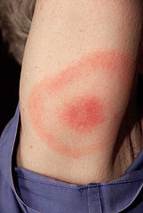

Ixodes Ricinus - Castor Bean Tick
Ixodes ricinus, the castor bean tick, is a chiefly European species of hard-bodied tick. It may reach a length of 11 mm (0.43 in) when engorged with a blood meal, and can transmit both bacterial and viral pathogens such as the causative agents of Lyme disease and tick-borne encephalitis. (Wikipedia). Based on the incidence rate for Lyme disease in each region in Poland and Czech Republic we can estimate how dangerous ticks are in choosen area. Danger Indexes in Poland and Czech Rebulic are different but ticks are vectors of the same pathogens in both countries. Low resolution data for all European countries informs only about castor bean tick existence in the choosen area. |
Two most common diseases spreading byIxodes ricinus are:
|
Lyme disease is caused by bacteria Borrelia burgdorferi. It is transmitted to humans through the bite of infected ticks (in Europe mostly castor bean tick - Ixodes Ricinus, in USA by blacklegged tick - Ixodes scapularis). Symptoms of lyme disease are: fever, headache, fatigue and characteristic skyn rash called erythema migrants. Erythema migrans is a red circular rash that often appears at the site of the tick bite within 3 to 14 days after the bite. The rash grows. In some cases many rashes appear. Common sites are the thigs, groin, trunk and armpits. The rash not always occur as the effect of the lyme disease infection. Sometimes tick saliva can cause allergic reaction similar to the erythema migrans. Allergic reactions usually appear within hours to few days after the tick bite and disappear within few days. Untreated infection may spread to joints, the heart and the nervous system. These are signs of late lyme disease. Arthritis is most likely to appear as brief bouts of pain and swelling in one or more large joints like the knees. Nervous system symptoms include: numbness, pain, nerve paralysis and meningitis. Rarely, irregularities of the heart rythm may occur. Problems with memory or concentration, fatigue, headache and sleep disturbances sometimes persist after treatment. Be careful! Different people exhibit different signs of Lyme disease. Even erythema migrans not always appears. Additionaly, many of the symptoms of Lyme disease are similar to those of other diseases. The best way is to consult with your doctor for the best and correct diagnosis. Diagnosis of Lyme disease takes into account the following factors:
Blood tests measure antibodies against Lyme disease bacteria. It can take 4-6 weeks after infection for the body to produce significant for measure level of antibodies. Laboratory tests must be interpreted based in the length of infection. Treatment of Lyme disease is based on the antibiotics. Patients treated in the early stage of disease usually recover rapidly and completly. In later stages of Lyme disease patients also respond well to antibiotics. Unrecognized Lyme disease may cause chronic illnes and permament damage to joints or the nervous system. Prevention. There is no vaccacine for Lyme disease. The best way to to be healthy is to avoid ticks which are spreading disease. To do that:
Important links:
Text above is based on the information from CDC brochure: Educational brochure about Lyme Disease The medical information on our website is provided without any representations or warranties, express or implied. You must rely only on the medical advice from your doctor. |
Tickborne encephalitis or TBE, is a human viral infectious disease involving the central nervous system. TBE is caused by the tick-borne encephalitis virus (TBEV), a member of the family Flaviviridae, and was initially isolated in 1937. Three virus sub-types are described: European or Western tick-borne encephalitis virus, Siberian tick-borne encephalitis virus, and Far eastern Tick-borne encephalitis virus (formerly known as Russian Spring Summer encephalitis virus, RSSEV). In Europe it is transmitted to humans by castor bean tick (Ixodes Ricinus) bite. Ticks act as both vector and virus reservoir. Symptoms. The incubation period of TBE is usually between 7 and 14 days and is asymptomatic. Shorter incubation times have been reported after milk-borne exposure. In contrast to Far-eastern TBE, European TBE is more severe in adults than in children where meningitis is more frequently observed. In approximately two-thirds of patients infected with the European TBE virus, only an early (viremic) phase is experienced; symptoms are nonspecific and may include fever, malaise, anorexia, muscle aches, headache, nausea, and/or vomiting. After about 8 days of remission, a second phase of disease occurs in 20% to 30% of patients. These patients may experience a clinical illness that involves the central nervous system with symptoms of meningitis (e.g., fever, headache, and a stiff neck), encephalitis (e.g., drowsiness, confusion, sensory disturbances, and/or motor abnormalities such as paralysis), or meningoencephalitis. The convalescent or recovery period can be long and the incidence of sequelae may vary between 30% and 60%, with long-term or even permanent neurologic symptoms. Neuropsychiatric sequelae have been reported in 10-20% of patients. Diagnosis. During the first phase of the disease, the most common laboratory abnormalities are a low white blood cell count (leukopenia) and a low platelet count (thrombocytopenia). Liver enzymes in the serum may also be mildly elevated. After the onset of neurologic disease during the second phase, an increase in the number of white blood cells in the blood and the cerebrospinal fluid (CSF) is usually found. Virus can be isolated from the blood during the first phase of the disease. Laboratory diagnosis usually depends on detection of specific IgM in either blood or CSF, usually appearing later, during the second phase of the disease. Tretment. There is no specific antiviral treatment for TBE. Prevention. Two inactivated cell culture-derived TBE vaccines are available in Europe, in adult and pediatric formulations: FSME-IMMUN (Baxter, Austria) and Encepur (Novartis, Germany). The other type of prevention is self-awarness:
Important links:
Text above is based on the information from CDC: Tick-borne Encephalitis (TBE) site. The medical information on our website is provided without any representations or warranties, express or implied. You must rely only on the medical advice from your doctor. |
Data about Ixodes Ricinus tick varies between countries and areas. Poland and Czech Republic Danger Index is counted on the base of Lyme Disease Incidence Rate. For Europe there is only information about Ixodes Ricnius existence in each country. |
Lyme Disease Danger Index: Information about the probability of Lyme Disease infection on the highlighted administrative unit. Index of danger level 1000 is equal to 4 permille of the area population infected which is the highest level for Poland. |
The slope (trend): is (usually) connected to measurements from many years or in some cases from just one year (in this case previous years are treated as 0-Danger Index and slope is overestimated). Slope is based on a linear trend, it's quality depends on the amount of measurements - the more measurements are made, the more accurate the index is. Slope value (-10) means that trend is falling down. Slope (0) means that the trend is stable. (+10) slope means that it is trending upwards - area with this slope value may be more dangerous year by year! We choose Lyme Disease as the Danger Index because it is well documented by Polish Sanitary and Epidemiological Stations. Remember about safety in the voivodships and regions with high Lyme Disease Danger Index and/or Slope. |
Lyme Disease Danger Index: Information about the probability of Lyme Disease infection on the highlighted administrative unit. Indexes are based on the measurements from 2009, 2011 and 2012 but on the map we use only 2012 D.I. Trend is not calculated because lyme disease danger indexes limits are different year by year according to the relationship: |
| Danger index | Incidence index interval 2009 | Incidence index interval 2011 | Incidence index interval 2012 |
|---|---|---|---|
| 1 | 1-16 | 3-21 | 1-12 |
| 2 | 17-25 | 22-36 | 13-22 |
| 3 | 26-43 | 37-50 | 23-36 |
| 4 | 44-73 | 51-94 | 37-55 |
| 5 | 74+ | 95+ | 56-252 |
Source and DATA ACCESS and POLICIES: The information about borreliosis can be found on The Czech's Republic National Institute of Public Health’s webpage [1]. The direct weblink to the obtained data is as follows: [2]. Data on this sites is licensed by CC BY - SA 3.0. Data may be shared and adapted for any purpose with appriopriate credit and on the same license as metadata. |
Castor Bean Tick occurence: The presence of insects is based on data from Wikipedia page. The data are divided into two indicators: [1] - risk region [0] - secure region. The data was created based on the maps and descriptions from the corresponding Wikipedia’s websites. (See data access and policies). |
Data access and policies: The data is avaible on the webpage: [1]. This sata may be shared and adapted for any purpose with appriopriate credit and on the same license as metadata. More information: [2]. |